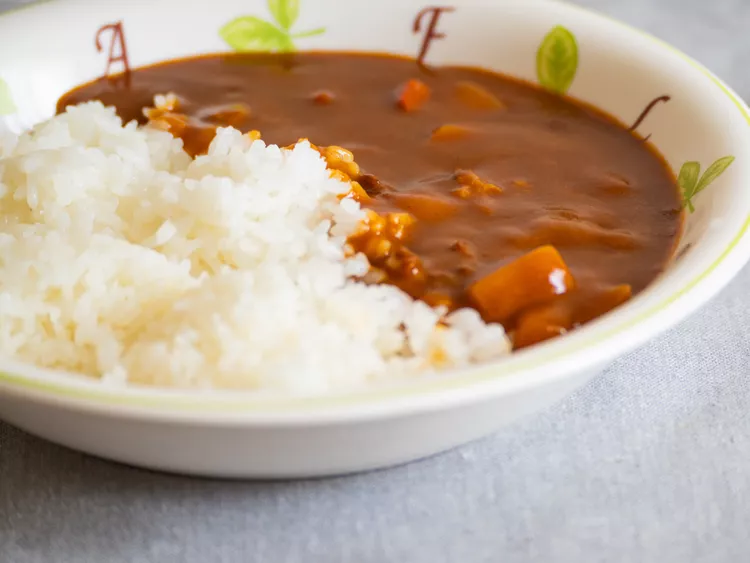

Curry

Description
Simple 3-ingredient curry over rice with chicken and potatoes
Ingredients
- 1 3.2-ounce package of curry cubes (such as S&B’s Golden Curry)
- 2 medium potatoes, peeled and cubed
- 1 pound chicken breasts or thighs, cut into 1-inch cubes (or another protein of your choice)
- 2 1/2 cups water
- 1 tablespoon vegetable oil
Steps
- Heat oil in a large skillet or Dutch oven over medium-high heat and sauté the protein for about 5 minutes. Add potatoes and/or other vegetables, if using, and sauté for another 3 to 4 minutes.
- Add the water and bring everything to a boil. Then lower the heat and simmer, covered, for about 15 minutes.
- Turn the heat to low. Break the curry roux into cubes and add them to the mixture. Stir until the cubes are completely melted. Simmer for another 5 minutes or until the curry is heated through. Serve with rice.
Home